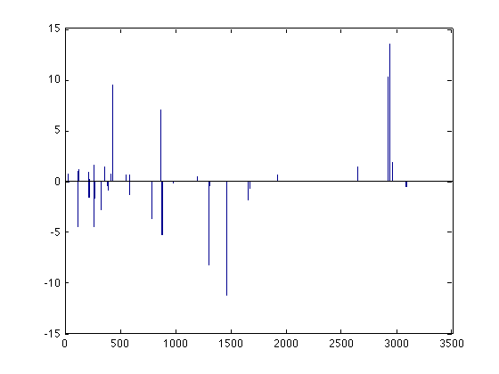
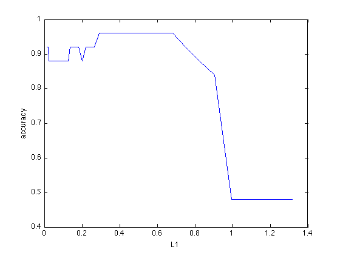
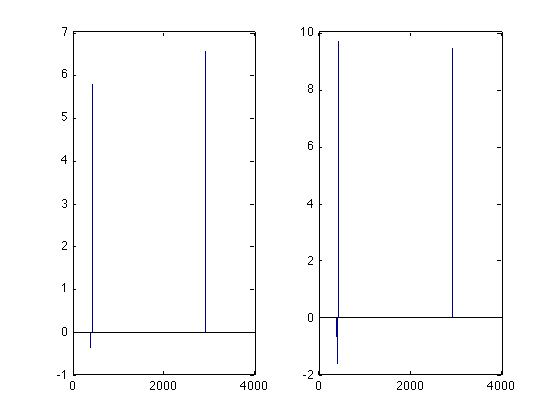
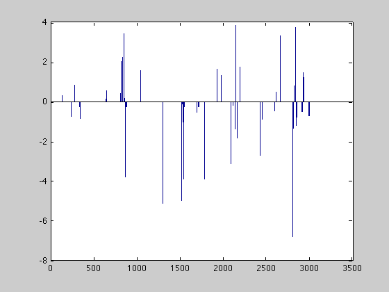
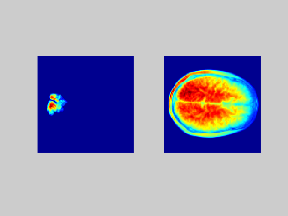

Contents
Examples
In the following examples we will make use of a neuroimaging dataset acquired at the Donders Institute. This data and a description can be downloaded from https://sites.google.com/site/cogneurodynamics/data
load 69digits
Elastic net regression
Elastic net regression can be used to get sparse solutions where regression coefficient vectors consist of many zeros. Elastic net regression allows for linear and logistic regression depending on the 'family' parameter ('gaussian' or 'binomial'). Here, we deal with logistic regression only and focus on classification. This toolbox implements two versions of elastic net: dml.enet and dml.glmnet. The former one is more general and implemented in Matlab. The latter one is less general and calls external Fortran code, making it much faster. In the following, we show how to use these two implementations on our example data.
dml.enet minimizes the sum squared error on the data plus a regularization term of the form:

where the betas are the regression coefficients, L1 is a scalar and L2 is a scalar or a matrix. The L1 and L2 parameters provide a different form of regularization, with L1 giving sparse solutions and L2 giving smooth solutions. For the moment, we fix L2 to a small constant (default is 1e-6) and want to find the solution for L1=0.1.
m = dml.enet('family','binomial','L1',0.1); m = m.train(X,Y);
The sparse solution is returned in the model.weights field:
bar(m.model.weights);
Note however that directly finding the solution for a small L1 value can be numerically unstable. It's better to approximate this solution using small decreases in the L1 value. Furthermore, typically, the value of L1 is unknown and one wants to find such a value. This is where the gridsearch comes into play. We first generate a suitable regularization path (values of L1) to follow using a helper function
v = dml.enet.lambdapath(X,Y,'binomial',50,1e-2);
and then we use it in a gridsearch
m = dml.gridsearch('cv',dml.crossvalidator('type','split','stat','accuracy','mva',dml.enet('family','binomial','restart',false)),'vars','L1','vals',v); tic; m = m.train(X,Y); toc
Elapsed time is 16.842036 seconds.
In order to see how performance changes as a function of L1, we can use the following code:
plot(m.configs,m.outcome); xlabel('L1'); ylabel('accuracy')
The associated configuration of parameter values is used to retrain the model on all data. This model can be accessed using the m.model field. Note that this model can differ from the model(s) obtained using crossvalidation since all data is used:
subplot(1,2,1); bar(m.models{m.optimum}.weights);
subplot(1,2,2); bar(m.model.weights);
 The same results can be achieved using dml.glmnet. However, here the regularization term is a bit different:

Furthermore, the cross-validation and determination of the regularization path is done automatically inside the model. We can call this code as follows:
m = dml.glmnet; tic; m = m.train(X,Y); toc; close; bar(m.model.weights);
Elapsed time is 1.397489 seconds.
Bayesian logistic regression with a multivariate Laplace prior
Sparse orthonormalized partial least squares
Dealing with neural data
MLN also offers support for handling and visualizing neural data. For instance, suppose we trained the following model:
m = dml.naive; m = m.train(X,Y); w = m.model.divergence;
Then, we can plot the contributions to the decoding back to brain space as follows:
M=mask; M(M) = w; subplot(1,2,1); imagesc(mean(abs(M),3)); axis off; axis square; subplot(1,2,2); imagesc(mean(structural,3)); axis off; axis square
It may be more convenient however to write these files to NIFTI format such that the data can be handled by standard fMRI packages: